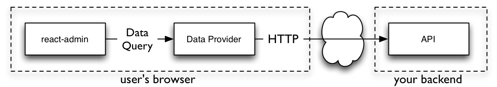

Data Providers
Whenever react-admin needs to communicate with the API, it calls methods on the Data Provider object.
dataProvider
.getOne('posts', { id: 123 })
.then(response => {
console.log(response.data); // { id: 123, title: "hello, world" }
});
It’s the Data Provider’s job to turn these method calls into HTTP requests, and transform the HTTP responses to the data format expected by react-admin. In technical terms, a Data Provider is an adapter for an API.
And to inject a Data Provider in a react-admin application, pass it as the dataProvider prop of the <Admin> component, as follows:
import { Admin, Resource } from 'react-admin';
import dataProvider from '../myDataProvider';
const App = () => (
<Admin dataProvider={dataProvider}>
// ...
</Admin>
)
Thanks to this adapter injection system, react-admin can communicate with any API, whether it uses REST, GraphQL, RPC, or even SOAP, regardless of the dialect it uses. The Data Provider is also the ideal place to add custom HTTP headers, authentication, etc.

A Data Provider must have the following methods:
const dataProvider = {
getList: (resource, params) => Promise,
getOne: (resource, params) => Promise,
getMany: (resource, params) => Promise,
getManyReference: (resource, params) => Promise,
create: (resource, params) => Promise,
update: (resource, params) => Promise,
updateMany: (resource, params) => Promise,
delete: (resource, params) => Promise,
deleteMany: (resource, params) => Promise,
}
You can find an example Data Provider implementation at the end of this chapter.
Tip: In react-admin v2, Data Providers used to be functions, not objects. React-admin v3 can detect a legacy Data Provider and wrap an object around it. So Data Providers developed for react-admin v2 still work with react-admin v3.
Available Providers
The react-admin project includes 4 Data Providers:
- Simple REST: marmelab/ra-data-simple-rest (read more below). It serves mostly as an example. Incidentally, it is compatible with the FakeRest API.
- JSON server: marmelab/ra-data-json-server. Great for prototyping an admin over a yet-to-be-developed REST API.
- Simple GraphQL: marmelab/ra-data-graphql-simple. A GraphQL provider built with Apollo and tailored to target a simple GraphQL implementation.
- Local JSON: marmelab/ra-data-fakerest. Based on a local object, it doesn’t even use HTTP. Use it for testing purposes.
Developers from the react-admin community have open-sourced Data Providers for many more backends:
- AWS Amplify: MrHertal/react-admin-amplify
- Configurable Identity Property REST Client: zachrybaker/ra-data-rest-client
- Django Rest Framework: synaptic-cl/ra-data-drf
- Express & Sequelize: express-sequelize-crud
- Feathersjs: josx/ra-data-feathers
- Firebase Firestore: benwinding/react-admin-firebase.
- Firebase Realtime Database: aymendhaya/ra-data-firebase-client.
- GraphQL: marmelab/ra-data-graphql (uses Apollo)
- HAL: b-social/ra-data-hal
- Hasura: hasura/ra-data-hasura
- Hydra / JSON-LD: api-platform/admin/hydra
- IndexedDB: tykoth/ra-data-dexie
- JSON API: henvo/ra-jsonapi-client
- JSON HAL: ra-data-json-hal
- JSON server: marmelab/ra-data-json-server.
- LocalStorage: marmelab/ra-data-localstorage
- Loopback3: darthwesker/react-admin-loopback
- Loopback4: elmaistrenko/react-admin-lb4
- Moleculer Microservices: RancaguaInnova/moleculer-data-provider
- NestJS CRUD: rayman1104/ra-data-nestjsx-crud
- Parse: almahdi/ra-data-parse
- PostGraphile: bowlingx/ra-postgraphile
- PostgREST: raphiniert-com/ra-data-postgrest
- Prisma: weakky/ra-data-prisma
- Prisma Version 2: panter/ra-data-prisma
- OpenCRUD: weakky/ra-data-opencrud
- REST-HAPI: ra-data-rest-hapi
- Sails.js: mpampin/ra-data-json-sails
- Spring Boot: vishpat/ra-data-springboot-rest
- Strapi: nazirov91/ra-strapi-rest
If you’ve written a Data Provider for another backend, and open-sourced it, please help complete this list with your package.
Tip: In version 1, react-admin was called admin-on-rest (AOR), and developers shared Data Providers for even more backends. Due to breaking changes in v2, these providers are no longer working. Fortunately, Data Providers aren’t complex pieces of code, and using legacy Data Provider with a recent react-admin version requires minimal changes. If you are a maintainer of one of these projects, we would warmly welcome an upgrade.
- DynamoDb: abiglobalhealth/aor-dynamodb-client
- Epilogue: dunghuynh/aor-epilogue-client
- Parse Server: leperone/aor-parseserver-client
- Xmysql: soaserele/aor-xmysql
Usage
As an example, let’s focus on the Simple REST data provider. It fits REST APIs using simple GET parameters for filters and sorting.
Install the ra-data-simple-rest package to use this provider.
yarn add ra-data-simple-rest
Then, initialize the provider with the REST backend URL, and pass the result to the dataProvider prop of the <Admin> component:
// in src/App.js
import * as React from "react";
import { Admin, Resource } from 'react-admin';
import simpleRestProvider from 'ra-data-simple-rest';
import { PostList } from './posts';
const App = () => (
<Admin dataProvider={simpleRestProvider('http://path.to.my.api/')}>
<Resource name="posts" list={PostList} />
</Admin>
);
export default App;
Here is how this Data Provider maps react-admin calls to API calls:
| Method name | API call |
|---|---|
getList |
GET http://my.api.url/posts?sort=["title","ASC"]&range=[0, 24]&filter={"title":"bar"} |
getOne |
GET http://my.api.url/posts/123 |
getMany |
GET http://my.api.url/posts?filter={"id":[123,456,789]} |
getManyReference |
GET http://my.api.url/posts?filter={"author_id":345} |
create |
POST http://my.api.url/posts/123 |
update |
PUT http://my.api.url/posts/123 |
updateMany |
Multiple calls to PUT http://my.api.url/posts/123 |
delete |
DELETE http://my.api.url/posts/123 |
deleteMany |
Multiple calls to DELETE http://my.api.url/posts/123 |
Note: The simple REST client expects the API to include a Content-Range header in the response to getList calls. The value must be the total number of resources in the collection. This allows react-admin to know how many pages of resources there are in total, and build the pagination controls.
Content-Range: posts 0-24/319
If your API is on another domain as the JS code, you’ll need to whitelist this header with an Access-Control-Expose-Headers CORS header.
Access-Control-Expose-Headers: Content-Range
Adding Custom Headers
The simpleRestProvider function accepts an HTTP client function as second argument. By default, it uses react-admin’s fetchUtils.fetchJson() function as HTTP client. It’s similar to HTML5 fetch(), except it handles JSON decoding and HTTP error codes automatically.
That means that if you need to add custom headers to your requests, you can just wrap the fetchJson() call inside your own function:
import { fetchUtils, Admin, Resource } from 'react-admin';
import simpleRestProvider from 'ra-data-simple-rest';
const fetchJson = (url, options = {}) => {
if (!options.headers) {
options.headers = new Headers({ Accept: 'application/json' });
}
// add your own headers here
options.headers.set('X-Custom-Header', 'foobar');
return fetchUtils.fetchJson(url, options);
}
const dataProvider = simpleRestProvider('http://path.to.my.api/', fetchJson);
const App = () => (
<Admin dataProvider={dataProvider}>
<Resource name="posts" list={PostList} />
</Admin>
);
Now all the requests to the REST API will contain the X-Custom-Header: foobar header.
Tip: The most common usage of custom headers is for authentication. fetchJson has built-on support for the Authorization token header:
const fetchJson = (url, options = {}) => {
options.user = {
authenticated: true,
token: 'SRTRDFVESGNJYTUKTYTHRG'
};
return fetchUtils.fetchJson(url, options);
};
const dataProvider = simpleRestProvider('http://path.to.my.api/', fetchJson);
Now all the requests to the REST API will contain the Authorization: SRTRDFVESGNJYTUKTYTHRG header.
Extending a Data Provider (Example of File Upload)
As Data Providers are just objects, you can extend them with custom logic for a given method, or a given resource.
For instance, the following Data Provider extends the ra-data-simple-rest provider, and adds image upload support for the update('posts') call (react-admin offers an <ImageInput /> component that allows image upload).
import simpleRestProvider from 'ra-data-simple-rest';
const dataProvider = simpleRestProvider('http://path.to.my.api/');
const myDataProvider = {
...dataProvider,
update: (resource, params) => {
if (resource !== 'posts' || !params.data.pictures) {
// fallback to the default implementation
return dataProvider.update(resource, params);
}
/**
* For posts update only, convert uploaded image in base 64 and attach it to
* the `picture` sent property, with `src` and `title` attributes.
*/
// Freshly dropped pictures are File objects and must be converted to base64 strings
const newPictures = params.data.pictures.filter(
p => p.rawFile instanceof File
);
const formerPictures = params.data.pictures.filter(
p => !(p.rawFile instanceof File)
);
return Promise.all(newPictures.map(convertFileToBase64))
.then(base64Pictures =>
base64Pictures.map(picture64 => ({
src: picture64,
title: `${params.data.title}`,
}))
)
.then(transformedNewPictures =>
dataProvider.update(resource, {
...params,
data: {
...params.data,
pictures: [
...transformedNewPictures,
...formerPictures,
],
},
})
);
},
};
/**
* Convert a `File` object returned by the upload input into a base 64 string.
* That's not the most optimized way to store images in production, but it's
* enough to illustrate the idea of data provider decoration.
*/
const convertFileToBase64 = file =>
new Promise((resolve, reject) => {
const reader = new FileReader();
reader.onload = () => resolve(reader.result);
reader.onerror = reject;
reader.readAsDataURL(file.rawFile);
});
export default myDataProvider;
Using this technique, you can also combine two Data Providers for two backends into a single object, or use a Proxy to transform responses for all methods.
Writing Your Own Data Provider
APIs are so diverse that quite often, none of the available Data Providers suit you API. In such cases, you’ll have to write your own Data Provider. Don’t worry, it usually takes only a couple of hours.
The methods of a Data Provider receive a request, and return a promise for a response. Both the request and the response format are standardized.
Request Format
Data queries require a method (e.g. getOne), a resource (e.g. ‘posts’) and a set of parameters.
Tip: In comparison, HTTP requests require a verb (e.g. ‘GET’), an url (e.g. ‘http://myapi.com/posts’), a list of headers (like Content-Type) and a body.
Standard methods are:
| Method | Usage | Parameters format |
|---|---|---|
getList |
Search for resources | { pagination: { page: {int} , perPage: {int} }, sort: { field: {string}, order: {string} }, filter: {Object} } |
getOne |
Read a single resource, by id | { id: {mixed} } |
getMany |
Read a list of resource, by ids | { ids: {mixed[]} } |
getManyReference |
Read a list of resources related to another one | { target: {string}, id: {mixed}, pagination: { page: {int} , perPage: {int} }, sort: { field: {string}, order: {string} }, filter: {Object} } |
create |
Create a single resource | { data: {Object} } |
update |
Update a single resource | { id: {mixed}, data: {Object}, previousData: {Object} } |
updateMany |
Update multiple resources | { ids: {mixed[]}, data: {Object} } |
delete |
Delete a single resource | { id: {mixed}, previousData: {Object} } |
deleteMany |
Delete multiple resources | { ids: {mixed[]} } |
Here are several examples of how react-admin can call the Data Provider:
dataProvider.getList('posts', {
pagination: { page: 1, perPage: 5 },
sort: { field: 'title', order: 'ASC' },
filter: { author_id: 12 },
});
dataProvider.getOne('posts', { id: 123 });
dataProvider.getMany('posts', { ids: [123, 124, 125] });
dataProvider.getManyReference('comments', {
target: 'post_id',
id: 123,
sort: { field: 'created_at', order: 'DESC' }
});
dataProvider.update('posts', {
id: 123,
data: { title: "hello, world!" },
previousData: { title: "previous title" }
});
dataProvider.updateMany('posts', {
ids: [123, 234],
data: { views: 0 },
});
dataProvider.create('posts', { data: { title: "hello, world" } });
dataProvider.delete('posts', {
id: 123,
previousData: { title: "hello, world" }
});
dataProvider.deleteMany('posts', { ids: [123, 234] });
Tip: If your API supports more request types, you can add more methods to the Data Provider (for instance to support upserts, aggregations, or Remote Procedure Call). React-admin won’t call these methods directly, but you can call them in your own component thanks to the useDataProvider hook described in the Querying the API documentation.
Response Format
Data Providers methods must return a Promise for an object with a data property.
| Method | Response format |
|---|---|
getList |
{ data: {Record[]}, total: {int}, validUntil?: {Date} } |
getOne |
{ data: {Record}, validUntil?: {Date} } |
getMany |
{ data: {Record[]}, validUntil?: {Date} } |
getManyReference |
{ data: {Record[]}, total: {int} } |
create |
{ data: {Record} } |
update |
{ data: {Record} } |
updateMany |
{ data: {mixed[]} } The ids which have been updated |
delete |
{ data: {Record} } The record that has been deleted |
deleteMany |
{ data: {mixed[]} } The ids of the deleted records (optional) |
A {Record} is an object literal with at least an id property, e.g. { id: 123, title: "hello, world" }.
Building up on the previous example, here are example responses matching the format expected by react-admin:
dataProvider.getList('posts', {
pagination: { page: 1, perPage: 5 },
sort: { field: 'title', order: 'ASC' },
filter: { author_id: 12 },
})
.then(response => console.log(response));
// {
// data: [
// { id: 126, title: "allo?", author_id: 12 },
// { id: 127, title: "bien le bonjour", author_id: 12 },
// { id: 124, title: "good day sunshine", author_id: 12 },
// { id: 123, title: "hello, world", author_id: 12 },
// { id: 125, title: "howdy partner", author_id: 12 },
// ],
// total: 27
// }
dataProvider.getOne('posts', { id: 123 })
.then(response => console.log(response));
// {
// data: { id: 123, title: "hello, world" }
// }
dataProvider.getMany('posts', { ids: [123, 124, 125] })
.then(response => console.log(response));
// {
// data: [
// { id: 123, title: "hello, world" },
// { id: 124, title: "good day sunshise" },
// { id: 125, title: "howdy partner" },
// ]
// }
dataProvider.getManyReference('comments', {
target: 'post_id',
id: 123,
sort: { field: 'created_at', order: 'DESC' }
})
.then(response => console.log(response));
// {
// data: [
// { id: 667, title: "I agree", post_id: 123 },
// { id: 895, title: "I don't agree", post_id: 123 },
// ],
// total: 2,
// }
dataProvider.create('posts', { data: { title: "hello, world" } })
.then(response => console.log(response));
// {
// data: { id: 450, title: "hello, world" }
// }
dataProvider.update('posts', {
id: 123,
data: { title: "hello, world!" },
previousData: { title: "previous title" }
})
.then(response => console.log(response));
// {
// data: { id: 123, title: "hello, world!" }
// }
dataProvider.updateMany('posts', {
ids: [123, 234],
data: { views: 0 },
})
.then(response => console.log(response));
// {
// data: [123, 234]
// }
dataProvider.delete('posts', {
id: 123,
previousData: { title: "hello, world!" }
})
.then(response => console.log(response));
// {
// data: { id: 123, title: "hello, world" }
// }
dataProvider.deleteMany('posts', { ids: [123, 234] })
.then(response => console.log(response));
// {
// data: [123, 234]
// }
Tip: The validUntil field in the response is optional. It enables the Application cache, a client-side optimization to speed up rendering and reduce network traffic. Check the Caching documentation for more details.
Error Format
When the API backend returns an error, the Data Provider should return a rejected Promise containing an Error object. This object should contain a status property with the HTTP response code (404, 500, etc.). React-admin inspects this error code, and uses it for authentication (in case of 401 or 403 errors). Besides, react-admin displays the error message on screen in a temporary notification.
If you use fetchJson, you don’t need to do anything: HTTP errors are automatically decorated as expected by react-admin.
If you use another HTTP client, make sure you return a rejected Promise. You can use the HttpError class to throw an error with status in one line:
import { HttpError } from 'react-admin';
export default {
getList: (resource, params) => {
return new Promise((resolve, reject) => {
myApiClient(url, { ...options, headers: requestHeaders })
.then(response =>
response.text().then(text => ({
status: response.status,
statusText: response.statusText,
headers: response.headers,
body: text,
}))
)
.then(({ status, statusText, headers, body }) => {
let json;
try {
json = JSON.parse(body);
} catch (e) {
// not json, no big deal
}
if (status < 200 || status >= 300) {
return reject(
new HttpError(
(json && json.message) || statusText,
status,
json
)
);
}
return resolve({ status, headers, body, json });
});
});
},
// ...
};
Example Implementation
Let’s say that you want to map the react-admin requests to a REST backend exposing the following API:
# getList
GET http://path.to.my.api/posts?sort=["title","ASC"]&range=[0, 4]&filter={"author_id":12}
HTTP/1.1 200 OK
Content-Type: application/json
Content-Range: posts 0-4/27
[
{ "id": 126, "title": "allo?", "author_id": 12 },
{ "id": 127, "title": "bien le bonjour", "author_id": 12 },
{ "id": 124, "title": "good day sunshine", "author_id": 12 },
{ "id": 123, "title": "hello, world", "author_id": 12 },
{ "id": 125, "title": "howdy partner", "author_id": 12 }
]
# getOne
GET http://path.to.my.api/posts/123
HTTP/1.1 200 OK
Content-Type: application/json
{ "id": 123, "title": "hello, world", "author_id": 12 }
# getMany
GET http://path.to.my.api/posts?filter={"id":[123,124,125]}
HTTP/1.1 200 OK
Content-Type: application/json
[
{ "id": 123, "title": "hello, world", "author_id": 12 },
{ "id": 124, "title": "good day sunshine", "author_id": 12 },
{ "id": 125, "title": "howdy partner", "author_id": 12 }
]
# getManyReference
GET http://path.to.my.api/comments?sort=["created_at","DESC"]&range=[0, 24]&filter={"post_id":123}
HTTP/1.1 200 OK
Content-Type: application/json
Content-Range: comments 0-1/2
[
{ "id": 667, "title": "I agree", "post_id": 123 },
{ "id": 895, "title": "I don't agree", "post_id": 123 }
]
# create
POST http://path.to.my.api/posts
{ "title": "hello, world", "author_id": 12 }
HTTP/1.1 200 OK
Content-Type: application/json
{ "id": 123, "title": "hello, world", "author_id": 12 }
# update
PUT http://path.to.my.api/posts/123
{ "title": "hello, world!" }
HTTP/1.1 200 OK
Content-Type: application/json
{ "id": 123, "title": "hello, world!", "author_id": 12 }
# updateMany
PUT http://path.to.my.api/posts?filter={"id":[123,124,125]}
{ "title": "hello, world!" }
HTTP/1.1 200 OK
Content-Type: application/json
[123, 124, 125]
# delete
DELETE http://path.to.my.api/posts/123
HTTP/1.1 200 OK
Content-Type: application/json
{ "id": 123, "title": "hello, world", "author_id": 12 }
# deleteMany
DELETE http://path.to.my.api/posts?filter={"id":[123,124,125]}
HTTP/1.1 200 OK
Content-Type: application/json
[123, 124, 125]
Here is an example implementation, that you can use as a base for your own Data Providers:
import { fetchUtils } from 'react-admin';
import { stringify } from 'query-string';
const apiUrl = 'https://my.api.com/';
const httpClient = fetchUtils.fetchJson;
export default {
getList: (resource, params) => {
const { page, perPage } = params.pagination;
const { field, order } = params.sort;
const query = {
sort: JSON.stringify([field, order]),
range: JSON.stringify([(page - 1) * perPage, page * perPage - 1]),
filter: JSON.stringify(params.filter),
};
const url = `${apiUrl}/${resource}?${stringify(query)}`;
return httpClient(url).then(({ headers, json }) => ({
data: json,
total: parseInt(headers.get('content-range').split('/').pop(), 10),
}));
},
getOne: (resource, params) =>
httpClient(`${apiUrl}/${resource}/${params.id}`).then(({ json }) => ({
data: json,
})),
getMany: (resource, params) => {
const query = {
filter: JSON.stringify({ id: params.ids }),
};
const url = `${apiUrl}/${resource}?${stringify(query)}`;
return httpClient(url).then(({ json }) => ({ data: json }));
},
getManyReference: (resource, params) => {
const { page, perPage } = params.pagination;
const { field, order } = params.sort;
const query = {
sort: JSON.stringify([field, order]),
range: JSON.stringify([(page - 1) * perPage, page * perPage - 1]),
filter: JSON.stringify({
...params.filter,
[params.target]: params.id,
}),
};
const url = `${apiUrl}/${resource}?${stringify(query)}`;
return httpClient(url).then(({ headers, json }) => ({
data: json,
total: parseInt(headers.get('content-range').split('/').pop(), 10),
}));
},
update: (resource, params) =>
httpClient(`${apiUrl}/${resource}/${params.id}`, {
method: 'PUT',
body: JSON.stringify(params.data),
}).then(({ json }) => ({ data: json })),
updateMany: (resource, params) => {
const query = {
filter: JSON.stringify({ id: params.ids}),
};
return httpClient(`${apiUrl}/${resource}?${stringify(query)}`, {
method: 'PUT',
body: JSON.stringify(params.data),
}).then(({ json }) => ({ data: json }));
},
create: (resource, params) =>
httpClient(`${apiUrl}/${resource}`, {
method: 'POST',
body: JSON.stringify(params.data),
}).then(({ json }) => ({
data: { ...params.data, id: json.id },
})),
delete: (resource, params) =>
httpClient(`${apiUrl}/${resource}/${params.id}`, {
method: 'DELETE',
}).then(({ json }) => ({ data: json })),
deleteMany: (resource, params) => {
const query = {
filter: JSON.stringify({ id: params.ids}),
};
return httpClient(`${apiUrl}/${resource}?${stringify(query)}`, {
method: 'DELETE',
body: JSON.stringify(params.data),
}).then(({ json }) => ({ data: json }));
},
};
Using The Data Provider In Components
React-admin stores the Data Provider passed to <Admin> in a React context, so you can access it from anywhere in your code. To facilitate usage, react-admin provides many data provider hooks:
useDataProvideruseQueryuseQueryWithStoreuseMutationuseGetListuseGetOneuseGetManyuseGetManyReferenceuseCreateuseUpdateuseUpdateManyuseDeleteuseDeleteMany
Here is a glimpse of the useGetOne hook usage:
import { useGetOne } from 'react-admin';
const UserProfile = ({ record }) => {
const { data, loading, error } = useGetOne('users', record.id);
if (loading) { return <Loading />; }
if (error) { return <p>ERROR</p>; }
return <div>User {data.username}</div>;
};
You will find complete usage documentation for the data provider hooks in the Querying the API documentation chapter.